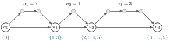
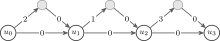
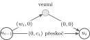
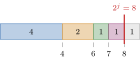
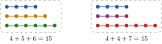

11.5 Podezřelé redukce z batohu (proseminář 5)¶
Rozšíření z prosemináře 5
Oddíl je z prosemináře 5 a jde nad rámec přednášky: čtyři chybné redukce z čísel, jejich opravy a algoritmy, které ukazují, že cílové problémy jsou ve skutečnosti v \(\href{../ch-cas/ch-cas-tridy-p-a-exp.html#def-tridy}{\class{woo-pk-def-tridy}{\PP}}\). Konstrukce ani algoritmy z něj na test znát nemusíš. Odnést si stačí kontrolu pro každou vlastní redukci v typové úloze 4: je výstup redukce polynomiálně velký vůči délce zápisu vstupu? Vyrábí-li konstrukce něco úměrného hodnotě binárně zapsaného čísla (vrcholy, políčka), je výstup exponenciální. Rozvinout číslo na strukturu smí jen redukce ze silně NP-těžkého problému, který je těžký i s čísly zapsanými unárně (kontrolní seznam v pododdílu 11.5.8).
\(\href{ch-cisla-ciselne-problemy.html#prob-subsetsum}{\class{woo-pk-prob-subsetsum}{\prob{Subset Sum}}}\) a \(\href{ch-cisla-ciselne-problemy.html#prob-knapsack}{\class{woo-pk-prob-knapsack}{\prob{Knapsack}}}\) jsou NP-úplné, ale jen slabě. Redukce z nich proto nabízejí řadu nenápadných chyb: často se objevují jako „důkaz“ NP-těžkosti, a přitom je cílový problém polynomiální. Projdeme čtyři takové redukce; u každé si nejdřív zkuste chybu najít sami.
11.5.1 \(\prob{Subset Sum}\to\prob{Exact Path (DAG)}\): velikost výstupu¶
Problém 11.18: \(\prob{Exact Path (DAG)}\)
Vstup: orientovaný acyklický graf \(G\), vrcholy \(s,t\) a číslo \(L\).
Otázka: existuje orientovaná cesta z \(s\) do \(t\) s přesně \(L\) hranami?
Redukce: \(\href{ch-cisla-ciselne-problemy.html#prob-subsetsum}{\class{woo-pk-prob-subsetsum}{\prob{Subset Sum}}} \mathrel{\href{../ch-redukce/ch-redukce-jak-porovnat-slozitost-dvou-problemu.html#def-redukce}{\class{woo-pk-def-redukce}{\redp}}} \href{#prob-exactpath}{\class{woo-pk-prob-exactpath}{\prob{Exact Path (DAG)}}}\)
\((a_1,\dots,a_n;\ T)\) \(\;\longmapsto\;\) \(\textcolor{#C62828}{\text{(chybná!)}}\) řetěz, \(L=T+n\)
„Důkaz“. Vrcholy \(s=u_0,u_1,\dots,u_n=t\). Mezi \(u_{i-1}\) a \(u_i\) vedou dvě trasy: přeskoč \(a_i\) – jediná hrana \(u_{i-1}\to u_i\) (délka 1); vezmi \(a_i\) – cesta přes \(a_i\) nových vrcholů (délka \(a_i+1\)). Položíme \(L=T+n\). Každá cesta z \(s\) do \(t\) projde všemi \(u_i\) a v každém úseku zvolí jednu trasu; je-li \(I\) množina úseků s volbou „vezmi“, má cesta délku \(n+\sum_{i\in I}a_i\). Odtud (\(\Rightarrow\)) i (\(\Leftarrow\)). „Konstrukci zjevně provedeme v polynomiálním čase.“

Cvičení – najděte chybu (proseminář 5)
Ekvivalence (\(\Rightarrow\)) i (\(\Leftarrow\)) je v pořádku. Kde je chyba? Zkuste navíc vymyslet algoritmus pro \(\href{#prob-exactpath}{\class{woo-pk-prob-exactpath}{\prob{Exact Path (DAG)}}}\). Pokud by byl polynomiální, co by to znamenalo? Nápověda: kolik bitů zabírá číslo \(a_i\) na vstupu a kolik vrcholů za něj přidáme do grafu?
Řešení
Chyba je ve velikosti výstupu. Věta „konstrukci zjevně provedeme v polynomiálním čase“ není pravda: číslo \(a_i\) zabírá na vstupu \(k\approx\log_2 a_i\) bitů, v grafu za něj ale přidáme \(a_i\approx 2^k\) vrcholů. Graf má celkem \(n+1+\sum_i a_i\) vrcholů – exponenciálně mnoho vůči délce vstupu (\(a_i=1\,000\,000\): 20 bitů, ale cesta s milionem vrcholů). Konstrukce je ve skutečnosti \(\href{ch-cisla-ciselne-problemy.html#prob-subsetsum}{\class{woo-pk-prob-subsetsum}{\prob{Subset Sum}}}\) zapsaný unárně: číslo \(a_i\) je „namalované“ jako \(a_i\) vrcholů.
\(\href{#prob-exactpath}{\class{woo-pk-prob-exactpath}{\prob{Exact Path (DAG)}}}\) je dokonce v \(\href{../ch-cas/ch-cas-tridy-p-a-exp.html#def-tridy}{\class{woo-pk-def-tridy}{\PP}}\). Pro každý vrchol \(v\) spočítáme množinu \(D[v]\) délek všech cest z \(s\) do \(v\): \(D[s]=\{0\}\) a vrcholy procházíme v topologickém pořadí,
Délka cesty je nejvýš \(|V|-1\), takže \(|D[v]|\le|V|\) a čas je \(O(|V|\cdot|E|)\). Je to přesně DP pro Subset Sum – pro unárně zapsaná čísla je pseudopolynomiální čas \(O(n\cdot T)\) polynomiální. Kdyby byla redukce správná, plynulo by z toho \(\href{../ch-cas/ch-cas-tridy-p-a-exp.html#def-tridy}{\class{woo-pk-def-tridy}{\PP}}=\href{../ch-np/ch-np-tridy-nedeterministicke-casove-slozitosti.html#def-ntime}{\class{woo-pk-def-ntime}{\NP}}\).
11.5.2 Oprava: čísla nechme zapsaná binárně¶
Redukce: \(\href{ch-cisla-ciselne-problemy.html#prob-subsetsum}{\class{woo-pk-prob-subsetsum}{\prob{Subset Sum}}} \mathrel{\href{../ch-redukce/ch-redukce-jak-porovnat-slozitost-dvou-problemu.html#def-redukce}{\class{woo-pk-def-redukce}{\redp}}} \href{#prob-wexactpath}{\class{woo-pk-prob-wexactpath}{\prob{Weighted Exact Path}}}\)
\((a_1,\dots,a_n;\ T)\) \(\;\longmapsto\;\) řetěz s vahami, \(L=T\)
Problém 11.19: \(\prob{Weighted Exact Path}\)
Vstup: orientovaný acyklický graf \(G\) s nezápornými celočíselnými vahami hran (binárně), vrcholy \(s,t\) a číslo \(L\).
Otázka: existuje cesta z \(s\) do \(t\) se součtem vah přesně \(L\)?
Místo cesty s \(a_i\) vrcholy stačí jediný pomocný vrchol \(m_i\): přeskoč = hrana \(u_{i-1}\to u_i\) s vahou 0, vezmi = hrany \(u_{i-1}\to m_i\to u_i\) s vahami \(a_i\) a 0. Položíme \(L=T\). Graf má \(2n+1\) vrcholů a váhy jsou kopie čísel \(a_i\) \(\Rightarrow\) redukce je polynomiální; korektnost je stejná jako předtím. Algoritmus s množinami \(D[v]\) teď běží v čase \(O(L\cdot|E|)\) – je jen pseudopolynomiální.

Poučení
Chybná redukce je často správnou redukcí na jiný problém – zde na váženou variantu, kde čísla zůstanou zapsaná binárně. Problém bez vah je snadný, problém s vahami je (slabě) NP-těžký.
11.5.3 \(\prob{Knapsack}\to\prob{Longest Path in DAG}\): zapomenuté kritérium¶
Redukce: \(\href{ch-cisla-ciselne-problemy.html#prob-knapsack}{\class{woo-pk-prob-knapsack}{\prob{Knapsack}}} \mathrel{\href{../ch-redukce/ch-redukce-jak-porovnat-slozitost-dvou-problemu.html#def-redukce}{\class{woo-pk-def-redukce}{\redp}}} \prob{Longest Path (DAG)}\)
\((w,c,W,C)\) \(\;\longmapsto\;\) \(\textcolor{#C62828}{\text{(chybná!)}}\) řetěz, váha \(\ge C\)?
Stejný řetěz, „vezmi“ má váhu \(c_i\), „přeskoč“ váhu 0; ptáme se, zda existuje cesta s váhou \(\ge C\).
Cvičení – najděte chybu (proseminář 5)
Kde je chyba?
Řešení
Na nosnost \(W\) jsme zapomněli! Nejdelší cesta „vezme“ všechny předměty, implikace (\(\Leftarrow\)) neplatí. Nejdelší cesta v acyklickém grafu je navíc v \(\href{../ch-cas/ch-cas-tridy-p-a-exp.html#def-tridy}{\class{woo-pk-def-tridy}{\PP}}\) (DP v topologickém pořadí). Těžkost Knapsacku je v souboji dvou kritérií – jedno kritérium nestačí.
11.5.4 Oprava: dvě kritéria na hranách¶
Redukce: \(\href{ch-cisla-ciselne-problemy.html#prob-knapsack}{\class{woo-pk-prob-knapsack}{\prob{Knapsack}}} \mathrel{\href{../ch-redukce/ch-redukce-jak-porovnat-slozitost-dvou-problemu.html#def-redukce}{\class{woo-pk-def-redukce}{\redp}}} \href{#prob-rsp}{\class{woo-pk-prob-rsp}{\prob{Restricted Shortest Path}}}\)
\((w,c,W,C)\) \(\;\longmapsto\;\) řetěz s dvojicemi \((\ell,p)\), \(L=W\), \(P=\sum c_i-C\)
Problém 11.20: \(\prob{Restricted Shortest Path}\)
Vstup: orientovaný graf, každá hrana \(e\) má délku \(\ell(e)\ge0\) a cenu \(p(e)\ge0\); vrcholy \(s,t\), meze \(L\) a \(P\).
Otázka: existuje cesta z \(s\) do \(t\) s délkou \(\le L\) a zároveň cenou \(\le P\)?
Hrany nesou dvojici (délka, cena): vezmi = délka \(w_i\) (spotřebuje nosnost), přeskoč = cena \(c_i\) („ušlý zisk“). Cesta s množinou vzatých předmětů \(I\) má délku \(\sum_{i\in I}w_i\) a cenu \(\sum_{i\notin I}c_i\); a
\(\href{#prob-rsp}{\class{woo-pk-prob-rsp}{\prob{Restricted Shortest Path}}}\) je tedy slabě NP-těžký.

Poznámka
Pomocné kritérium („ze stejně krátkých cest tu nejlevnější“) Dijkstra zvládne. Těžké je až kritérium jako omezení („cena nejvýš \(P\)“).
11.5.5 \(\prob{Subset Sum}\to\prob{Power Subset Sum}\): gadget jen zčásti¶
Problém 11.21: \(\prob{Power Subset Sum}\)
Vstup: čísla \(b_1,\dots,b_m\), každé je mocnina dvojky (mohou se opakovat), a cíl \(T\).
Otázka: existuje podmnožina se součtem přesně \(T\)?
Redukce: \(\href{ch-cisla-ciselne-problemy.html#prob-subsetsum}{\class{woo-pk-prob-subsetsum}{\prob{Subset Sum}}} \mathrel{\href{../ch-redukce/ch-redukce-jak-porovnat-slozitost-dvou-problemu.html#def-redukce}{\class{woo-pk-def-redukce}{\redp}}} \href{#prob-powerss}{\class{woo-pk-prob-powerss}{\prob{Power Subset Sum}}}\)
\((a_1,\dots,a_n;\ T)\) \(\;\longmapsto\;\) \(\textcolor{#C62828}{\text{(chybná!)}}\) binární kousky čísel, cíl \(T\)
„Důkaz“. Každé číslo \(a_i\) rozložíme podle binárního zápisu na kousky: za každou jedničku na pozici \(j\) vytvoříme číslo \(2^j\). Např. \(13=1101_2\leadsto 8,4,1\) a \(6=110_2\leadsto4,2\). Číslo s \(k\) bity dá nejvýš \(k\) kousků po nejvýš \(k\) bitech, výstup je polynomiální. (\(\Rightarrow\)) vybereme všechny kousky čísel z \(I\). (\(\Leftarrow\)) „Kousky složíme zpět do původních čísel.“
Cvičení – najděte chybu (proseminář 5)
Velikost výstupu je tentokrát v pořádku. Chyba je jinde – zkuste důkaz na malém příkladu. Nápověda: čísla 13 a 6, cíl \(T=9\). Jaká je odpověď pro Subset Sum a jaká pro vyrobenou instanci?
Řešení
Protipříklad: Subset Sum pro \(13,6\) a \(T=9\): možné součty jsou \(0,6,13,19\) \(\Rightarrow\) \(\NE\). Vyrobená instance \(8,4,1,4,2\): \(8+1=9\) \(\Rightarrow\) \(\ANO\) – z čísla 13 jsme vzali jen část.
Všimni si: vybrané kousky \(8\) a \(1\) pocházejí z čísla 13, ale jeho kousek \(4\) zůstal nevybraný – konstrukce nic takového nezakazuje.
Kde důkaz selhal: v (\(\Leftarrow\)) jsme tiše předpokládali, že řešení bere kousky čísla buď všechny, nebo žádný. Nic v konstrukci to nevynucuje. Gadget musí vynutit volbu „všechno, nebo nic“. Stejně selže „redukce“ na \(\prob{Fractional Knapsack}\), kde lze vzít část předmětu.
Věta 11.22 (Power Subset Sum je v \(\href{../ch-cas/ch-cas-tridy-p-a-exp.html#def-tridy}{\class{woo-pk-def-tridy}{\PP}}\))
Hladový algoritmus – seřaď kousky sestupně, \(R:=T\), kousek \(2^j\) vezmi, pokud \(2^j\le R\) (a sniž \(R\)), na konci odpověz ANO \(\iff R=0\) – je korektní a běží v čase \(O(m\log m)\).
Lemma 11.23: Výměnné lemma
Mají-li mocniny dvojky \(p_1\ge p_2\ge\dots\), všechny \(\le2^j\), součet \(\ge2^j\), pak součet nějakého jejich prefixu je přesně \(2^j\).
Důkaz lemmatu
Prefixový součet před přidáním \(p_k\) je násobkem \(p_k\) (předchozí kousky jsou větší mocniny dvojky), stejně tak \(2^j\) je násobkem \(p_k\). Je-li prefixový součet \(<2^j\), je tedy \(\le 2^j-p_k\), a přidáním \(p_k\) proto \(2^j\) nemůžeme „přeskočit“. Protože celkový součet je \(\ge2^j\), někde ho trefíme přesně.
Důkaz věty
Je-li největší zbývající kousek \(2^j\le R\) a nějaké řešení ho nepoužije: kousky řešení jsou všechny \(\le2^j\) (větší než \(2^j\) už nezbyly nebo byly vyřazeny jako \(>R\)) a mají součet \(R\ge2^j\). Podle lemmatu mezi nimi je skupina se součtem přesně \(2^j\); tu vyměníme za náš kousek \(2^j\) a dostaneme řešení, které ho používá. Je-li naopak \(2^j>R\), kousek použít nelze. Kdyby byla redukce správná, plynulo by \(\href{../ch-cas/ch-cas-tridy-p-a-exp.html#def-tridy}{\class{woo-pk-def-tridy}{\PP}}=\href{../ch-np/ch-np-tridy-nedeterministicke-casove-slozitosti.html#def-ntime}{\class{woo-pk-def-ntime}{\NP}}\).

11.5.6 \(\prob{Partition}\to\prob{Balanced Split}\): opět velikost¶
Problém 11.24: \(\prob{Balanced Split}\)
Vstup: neorientovaný graf \(G\) a číslo \(q\).
Otázka: lze vrcholy rozdělit na \(q\) stejně velkých částí tak, aby žádná hrana nevedla mezi různými částmi? (Ekvivalentně: komponenty souvislosti lze seskupit do \(q\) skupin se stejným počtem vrcholů.)
Redukce: \(\href{ch-cisla-ciselne-problemy.html#prob-partition}{\class{woo-pk-prob-partition}{\prob{Partition}}} \mathrel{\href{../ch-redukce/ch-redukce-jak-porovnat-slozitost-dvou-problemu.html#def-redukce}{\class{woo-pk-def-redukce}{\redp}}} \href{#prob-balsplit}{\class{woo-pk-prob-balsplit}{\prob{Balanced Split}}}\), \(q=2\)
\((a_1,\dots,a_n)\) \(\;\longmapsto\;\) \(\textcolor{#C62828}{\text{(chybná!)}}\) cesty s \(a_i\) vrcholy
„Důkaz“. Pro každé číslo \(a_i\) přidáme cestu s \(a_i\) vrcholy, graf je disjunktní sjednocení těchto cest. Cesta je souvislá, leží tedy celá v jedné části; dvě stejně velké části odpovídají rozdělení čísel na dvě skupiny se součtem \(\frac12\sum_i a_i\). „Konstrukci zjevně provedeme v polynomiálním čase.“
Cvičení – dvě otázky (proseminář 5)
(1) Je redukce v pořádku? (2) Je \(\href{#prob-balsplit}{\class{woo-pk-prob-balsplit}{\prob{Balanced Split}}}\) s \(q=2\) vůbec NP-těžký? Nápověda: jak velké mohou být komponenty grafu s \(n\) vrcholy? Vzpomeňte si na DP pro Subset Sum.
Řešení
(1) Redukce není polynomiální. Graf má \(\sum_i a_i\) vrcholů, exponenciálně mnoho vůči bitové délce čísel – stejná chyba jako u Exact Path (DAG), jen v jiném převleku.
(2) Pro \(q=2\) je problém v \(\href{../ch-cas/ch-cas-tridy-p-a-exp.html#def-tridy}{\class{woo-pk-def-tridy}{\PP}}\). Velikosti komponent jsou čísla \(\le n\), zadaná „unárně“ samotným grafem; DP pro Subset Sum s cílem \(n/2\) tedy běží v polynomiálním čase.
11.5.7 Oprava: \(\prob{3-Partition}\redp\prob{Balanced Split}\)¶
Redukce: \(\href{ch-cisla-ciselne-problemy.html#prob-3partition}{\class{woo-pk-prob-3partition}{\prob{3-Partition}}} \mathrel{\href{../ch-redukce/ch-redukce-jak-porovnat-slozitost-dvou-problemu.html#def-redukce}{\class{woo-pk-def-redukce}{\redp}}} \href{#prob-balsplit}{\class{woo-pk-prob-balsplit}{\prob{Balanced Split}}}\)
\((a_1,\dots,a_{3q};\ B)\) \(\;\longmapsto\;\) cesty s \(a_i\) vrcholy, \(q\) částí
Chceme-li čísla převést na strukturu (vrcholy, cesty, políčka), musíme redukovat z problému, který je těžký i pro malá čísla – ze silně NP-těžkého. Pro obecné \(q\) (zadané na vstupu) to vyjde:
Konstrukce stejná jako předtím: pro každé \(a_i\) cesta s \(a_i\) vrcholy, počet částí \(q\). Graf má \(qB=\sum_i a_i\) vrcholů – to je teď v pořádku, protože redukujeme z instance zapsané unárně, jejíž délka je také aspoň \(\sum_i a_i\).
Důkaz: Korektnost
(\(\Rightarrow\)) Každá trojice se součtem \(B\) dá jednu část: tři cesty, celkem \(B\) vrcholů, žádná hrana mezi částmi.
(\(\Leftarrow\)) Mějme \(q\) částí po \(B\) vrcholech bez hran mezi nimi. Každá cesta je souvislá \(\Rightarrow\) leží celá v jedné části; čísla v každé části dávají součet \(B\); každé je ostře mezi \(B/4\) a \(B/2\) \(\Rightarrow\) v každé části jsou přesně tři.
Závěr: \(\href{#prob-balsplit}{\class{woo-pk-prob-balsplit}{\prob{Balanced Split}}}\) je NP-těžký, pokud je \(q\) součástí vstupu; pro \(q=2\) je polynomiální.

11.5.8 Jak poznat a opravit podezřelou redukci z čísel¶
Kontrolní seznam
- Velikost: vyrábí konstrukce něco úměrného hodnotě čísla („pro \(j=1,\dots,a_i\)…“)? Pak je výstup exponenciální.
- Zdravý rozum: umím cílový problém vyřešit přímo, třeba DP přes malý parametr? Pak by redukce dokazovala \(\href{../ch-cas/ch-cas-tridy-p-a-exp.html#def-tridy}{\class{woo-pk-def-tridy}{\PP}}=\href{../ch-np/ch-np-tridy-nedeterministicke-casove-slozitosti.html#def-ntime}{\class{woo-pk-def-ntime}{\NP}}\), takže je v ní chyba.
- Implikace (\(\Leftarrow\)): může řešení použít gadget jen zčásti? Vyzkoušejte malý protipříklad.
- Celý vstup: použili jsme všechno (ceny i nosnost)? Pokud ne, redukujeme ze speciálního případu, a ten může být snadný.
Opravy: čísla zůstanou čísly (váhy hran, velikosti, kapacity binárně: Weighted Exact Path, Restricted Shortest Path), nebo čísla se stanou strukturou – pak redukujte ze silně NP-těžkého problému (3-Partition \(\to\) Balanced Split). A pokud oprava nejde, možná je cílový problém prostě snadný.
| Chybná redukce | Chyba | Cíl je ve skutečnosti |
|---|---|---|
| Subset Sum \(\to\) Exact Path (DAG) | velikost | v \(\href{../ch-cas/ch-cas-tridy-p-a-exp.html#def-tridy}{\class{woo-pk-def-tridy}{\PP}}\) (DP) |
| Knapsack \(\to\) Longest Path (DAG) | zapomenutá nosnost | v \(\href{../ch-cas/ch-cas-tridy-p-a-exp.html#def-tridy}{\class{woo-pk-def-tridy}{\PP}}\) (DP) |
| Subset Sum \(\to\) Power Subset Sum | (\(\Leftarrow\)) – kousky | v \(\href{../ch-cas/ch-cas-tridy-p-a-exp.html#def-tridy}{\class{woo-pk-def-tridy}{\PP}}\) (hladově) |
| Partition \(\to\) Balanced Split, \(q=2\) | velikost | v \(\href{../ch-cas/ch-cas-tridy-p-a-exp.html#def-tridy}{\class{woo-pk-def-tridy}{\PP}}\) (DP) |
| Správná redukce | Výsledek | |
| \(\href{ch-cisla-ciselne-problemy.html#prob-subsetsum}{\class{woo-pk-prob-subsetsum}{\prob{Subset Sum}}}\mathrel{\href{../ch-redukce/ch-redukce-jak-porovnat-slozitost-dvou-problemu.html#def-redukce}{\class{woo-pk-def-redukce}{\redp}}}\href{#prob-wexactpath}{\class{woo-pk-prob-wexactpath}{\prob{Weighted Exact Path}}}\) | slabě NP-těžký | |
| \(\href{ch-cisla-ciselne-problemy.html#prob-knapsack}{\class{woo-pk-prob-knapsack}{\prob{Knapsack}}}\mathrel{\href{../ch-redukce/ch-redukce-jak-porovnat-slozitost-dvou-problemu.html#def-redukce}{\class{woo-pk-def-redukce}{\redp}}}\href{#prob-rsp}{\class{woo-pk-prob-rsp}{\prob{Restricted Shortest Path}}}\) | slabě NP-těžký | |
| \(\href{ch-cisla-ciselne-problemy.html#prob-3partition}{\class{woo-pk-prob-3partition}{\prob{3-Partition}}}\mathrel{\href{../ch-redukce/ch-redukce-jak-porovnat-slozitost-dvou-problemu.html#def-redukce}{\class{woo-pk-def-redukce}{\redp}}}\href{#prob-balsplit}{\class{woo-pk-prob-balsplit}{\prob{Balanced Split}}}\) | NP-těžký (\(q\) na vstupu) |